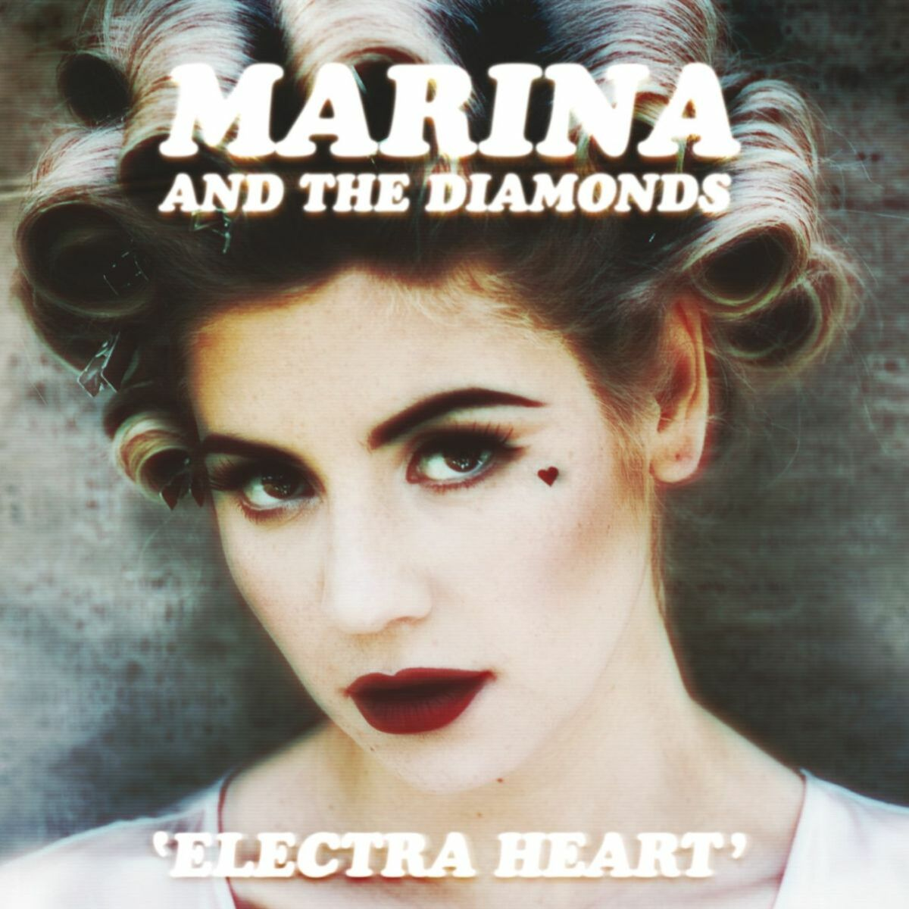

1985
geboorte van Marina Diamandis

In 1985 werd MARINA (geboren als Marina Lambrini Diamandis) geboren op 10 oktober in Brynmawr. Ze groeide op in een Grieks-Wels gezin en werd al vroeg beïnvloed door verschillende culturen en muziekstijlen. Haar jeugd legde de basis voor haar latere interesse in creativiteit en songwriting.
2005
start in Londen en muziekstudie

In 2005 verhuisde MARINA naar Londen om muziek te studeren en haar carrière als artiest te beginnen. Daar begon ze serieus te experimenteren met songwriting en haar eigen muzikale stijl te ontwikkelen. Deze periode was het begin van haar weg naar een professionele muziekcarrière.
2007
Begin van "Marina and the diamonds"

In 2007 begon MARINA muziek te delen op internet, vooral via platforms zoals MySpace. Ze gebruikte toen voor het eerst de naam “Marina and the Diamonds” en maakte vroege demos waarmee ze haar eigen stijl begon te ontwikkelen. Dit was het begin van haar carrière als onafhankelijke artiest.
2009
doorbraak met "obsessions"

In 2009 kreeg MARINA haar eerste echte doorbraak met de single Obsessions. Het nummer zorgde ervoor dat ze opgemerkt werd door het grote publiek en door de muziekindustrie in het Verenigd Koninkrijk. Dit was het begin van haar overgang van online artiest naar een echte opkomende popster.
2010
debuutalbum "The family jewels"

In 2010 bracht MARINA haar eerste studioalbum The Family Jewels uit. Het album liet haar unieke mix van pop, indie en theatrale invloeden zien en kreeg veel aandacht in het Verenigd Koninkrijk. Hiermee zette ze zichzelf definitief op de kaart als opkomende popartiest.
2012
doorbraak met electra heart

In 2012 bracht MARINA haar tweede studioalbum Electra Heart uit. Dit album werd haar grote internationale doorbraak en bevatte bekende hits zoals Primadonna. Het project had een duidelijk concept rond liefde, identiteit en popcultuur en maakte haar wereldwijd bekend.
2015
album froot

MARINA bracht haar derde album Froot uit, een kleurrijk popalbum met invloeden van disco en synthpop. Ze schreef alle nummers zelf, en fans prezen het album om de eerlijke teksten, volwassen stijl en sterke songs zoals “Froot” en “Blue”.
2018
Terugkeer na muzikale pauze

Na een korte pauze keerde MARINA terug naar de muziekwereld en begon ze aan een nieuw artistiek hoofdstuk. Ze werkte aan nieuwe nummers en vertelde fans dat ze zich creatiever en gelukkiger voelde dan vroeger.
2021
Ancient Dreams in a Modern Land

MARINA bracht haar album Ancient Dreams in a Modern Land uit, waarin ze thema’s zoals feminisme, milieu en maatschappelijke ongelijkheid verwerkt. Het album had een meer uitgesproken en politiekere toon dan haar eerdere werk, met nummers zoals “Man’s World” en “Purge the Poison”.
2024
Van popmuziek tot poëzie

In 2024 bracht Marina Diamandis haar poëziebundel Eat the World: A Collection of Poems uit. Het boek bevat persoonlijke gedichten over liefde, identiteit, mentale gezondheid en haar ervaringen als artiest naast haar muziekcarrière.
2025
Album: princess of power

In 2025 bracht Marina Diamandis haar zesde studioalbum Princess of Power uit, waarin ze een meer zelfverzekerde en speelse popstijl gebruikt. Het album draait rond thema’s zoals vrouwelijke kracht, vrijheid en zelfliefde, met een duidelijk kleurrijke en energieke sound.